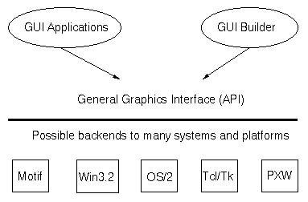
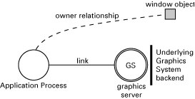

1 GS - The Graphics System
1.1 Introduction
GS is not recommended for use in new applications. Instead we recommend WX for applications that need a graphical user interface.
GS is not maintained and we plan to deprecate and remove it from the distribution as soon as possible, maybe already in the next major release (R15).
This section describes the general graphics interface to Erlang. This system was designed with the following requirements in mind:
- a graphics system which is easy to learn
- a graphics system which is portable to many different platforms.
Erlang has been implemented on a wide range of platforms and the graphics system works on all these platforms. Erlang applications can be written towards the same graphics API and the application can run on all supported platforms without modification.
Figure 1.1: Graphics Interface for Erlang
1.2 Basic Architecture of GS
The basic building block in the graphics system is the graphical object. Objects are created in a hierarchical fashion where each object has a parent. The most common object types are:
- window
- button
- label
- list box
- frame.
Whenever a new object is created, a unique object identifier is returned. This object identifier makes it possible to configure the object by changing its appearance and behaviour. This configuration of the object is controlled by the Options, also known as attributes or properties. These include width and height. Most options have a value of a specified type, but not all.
Whenever an Erlang process creates a graphical object, it is said to own the object. The graphics system must keep track of the owner of every graphical object in order to forward incoming events to the owner-process and kill the appropriate graphics window if the owner process suddenly dies.
Figure 1.2: Owner Process
Events are messages which are sent from the graphical object to the owner-process. The events the owner-process is informed about may include:
- the user has clicked on a button
- the user has entered text into an entry field
- the user has taken some action on the object, like moving the window.
Figure 1.3: Events Delivered to Owner Process